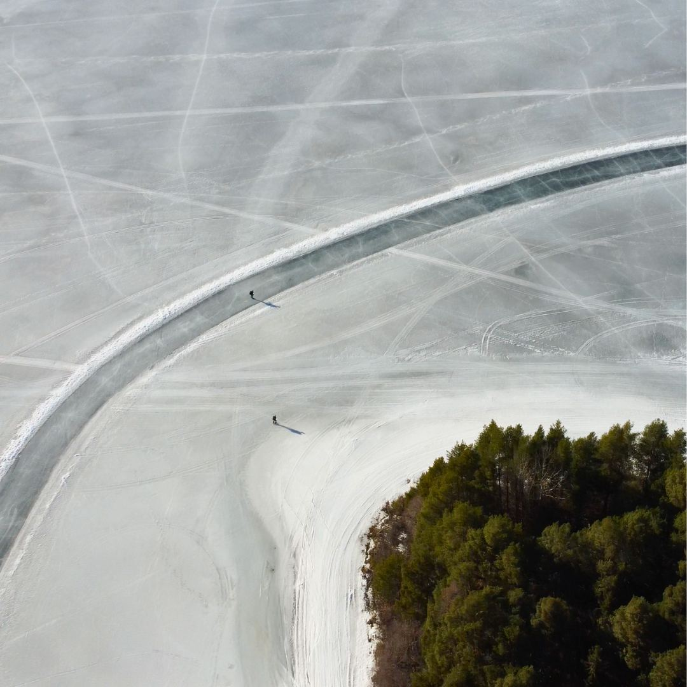

Ankomst
Du anländer till stugorna vid Orsasjön. Dags att göra i ordning din utrustning och redan ta en titt på isen. Via onlineservicen ser du hur isen och vädret ser ut de närmaste dagarna.

En sopad bana på cirka 15 kilometer över Orsasjön, och på kvällen din egen stuga ett stenkast från isen.

En bana på femton kilometer, sopad över en frusen sjö. I övrigt är det ingen där.
På Orsasjön i Dalarna sopas varje vinter en lång bana. Du åker där självständigt, i din egen takt.
Vad du exakt kommer att åka är aldrig bestämt i förväg. Naturis går inte att planera: via vår onlineservice får du aktuell information om isen, alla alternativa skridskoplatser och väderuppdateringar, så att du varje dag själv väljer var du åker.
Det kräver att du själv kan bedöma om isen är säker.
Du bor i stugor på First Camp Orsa-Dalarna. Ingen hotellgång, utan en egen plats där ni sitter tillsammans på kvällen och kliver rakt ut på isen på morgonen.
Den exakta indelningen av stugorna anpassar vi efter storleken på ert sällskap. Vill du veta mer i förväg? Hör av dig.


Orsa är som standard en självständig resa: ingen guide följer med ut på isen, men mellan den 10 januari och den 20 februari kan du boka till guidning på isen. Flyget till Sverige, boendet i stugorna och transporten på plats är ordnade. Via vår onlineservice får du aktuell information om isen, alla alternativa skridskoplatser och väderuppdateringar, samt information om alternativa aktiviteter och aktiviteter som du kan boka till.
Flyget till Sverige, stugorna och transporten på plats ingår.
Du betalar hela resans pris vid bokningen.
Aktuell information om isen, alla alternativa skridskoplatser och väderuppdateringar.
Ordningen ligger fast, innehållet inte. Var du åker skridskor väljer du själv varje dag, utifrån vädret och isen.
Du anländer till stugorna vid Orsasjön. Dags att göra i ordning din utrustning och redan ta en titt på isen. Via onlineservicen ser du hur isen och vädret ser ut de närmaste dagarna.
Lugn start på den sopade banan, så att du vänjer dig vid naturisen och skridskorna.

Varje dag tittar du på vädret och iskvaliteten, och bestämmer vart du ska. Ibland är det den långa banan över sjön, ibland söker du dig till någon av de alternativa skridskoplatserna i närheten. Går det inte att åka skridskor för stunden får du information om alternativa aktiviteter och aktiviteter som du kan boka till.

Beroende på din restid finns det på morgonen ofta utrymme för en sista sväng över sjön innan du åker.
Det exakta antalet dagar beror på resedatumet. Så snart det är fastställt anpassas programmet efter det.
Osäker på om något ingår? Fråga bara, så vet du säkert.
Inte som standard: skridskoresan till Orsa är en självständig resa, ingen guide följer med ut på isen. Flyget, boendet i stugorna och transporten på plats är ordnade, och via vår onlineservice får du aktuell information om isen, alla alternativa skridskoplatser och väderuppdateringar. Det kräver att du själv kan bedöma om isen är säker. Vill du inte ge dig ut på isen på egen hand kan du mellan den 10 januari och den 20 februari boka till guidning på isen: 100 € per dag för 1 person, + 50 € per dag för varje extra person, för så många dagar du vill. Guidade gruppresor planeras fortfarande.
På Orsasjön i Dalarna sopas varje vinter en lång bana på cirka 15 kilometer. Vad du exakt kommer att åka är aldrig bestämt i förväg: det beror på vädret och iskvaliteten. Via onlineservicen får du aktuell information om isen, alla alternativa skridskoplatser och väderuppdateringar.
Du bor i egna stugor på First Camp Orsa-Dalarna, precis vid isen. Ingen hotellgång, utan en egen plats där ni sitter tillsammans på kvällen och kliver rakt ut på isen på morgonen. Den exakta indelningen av stugorna anpassar vi efter storleken på ert sällskap.
Det som ingår är boendet i stugorna, flyget till Sverige, transporten på plats, en onlineservice med aktuell information om isen, alla alternativa skridskoplatser och väderuppdateringar, samt information om alternativa aktiviteter och aktiviteter som du kan boka till. Det som inte ingår är din egen skridskoutrustning och vinterkläder, obligatorisk säkerhetsutrustning (isdubbar och hjälm) och försäkringar.
Du behöver inte vara tävlingsåkare, men du måste kunna åka skridskor självständigt och kontrollerat. Är du osäker på din nivå tänker Joey igenom det tillsammans med dig i förväg.
Det bestämmer du själv: du åker självständigt och lägger upp dina dagar själv. Hur många kilometer det blir är aldrig bestämt i förväg - det avgör isen, vädret och dagens rutt.
Orsa är som standard en självständig resa: ingen guide följer med ut på isen. Det kräver att du själv kan bedöma om isen är säker. Vill du hellre inte göra det på egen hand kan du mellan den 10 januari och den 20 februari boka till guidning på isen. Via onlineservicen får du aktuell information om isen, alla alternativa skridskoplatser och väderuppdateringar. Men det är fortfarande naturis: god förberedelse hör till. Guidade gruppresor planeras fortfarande.
Naturis går inte att garantera. Via onlineservicen får du aktuell information om isen, alla alternativa skridskoplatser och väderuppdateringar, så att du själv kan byta till annan lämplig is. Går det inte att åka skridskor får du information om alternativa aktiviteter och aktiviteter som du kan boka till.
Du tar med din egen skridskoutrustning. För naturis rekommenderar vi långfärdsskridskor. Du behöver också vinterkläder som du kan vara ute i en hel dag; isdubbar och hjälm är obligatoriskt.
Priset börjar på 995 € per person för 4 dagar när ni är två. Välj din ankomst- och avresedag nedan, så ser du direkt vad din period kostar.
Så snart kalendern laddats väljer du din period här och bokar direkt. Fungerar det inte, mejla till schaatsennovakse@outlook.com eller messa till +31 6 17467643.
Även Falun och Finland är självständiga resor. I Falun kan du, precis som i Orsa, mellan den 10 januari och den 20 februari boka till guidning på isen. Falun bokar du som ett komplett paket med flyg, hyrbil och boende, och du väljer själv din ankomstdag. Guidade gruppresor planeras fortfarande.